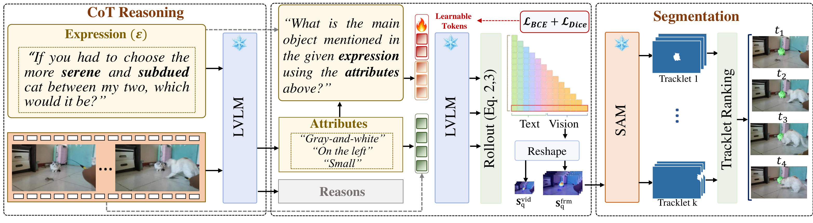

Abstract
Video reasoning segmentation requires localizing objects across video frames from natural language expressions, often involving spatial reasoning and implicit references. Recent approaches leverage frozen large vision-language models (LVLMs) by extracting attention maps and using them as spatial priors for segmentation, enabling training-free grounding. However, these attention maps are optimized for text generation rather than spatial localization, often resulting in diffuse and ambiguous grounding signals.
In this work, we introduce SteerSeg, a lightweight framework that identifies attention misalignment as the key bottleneck and proposes to steer attention at its source through input-level conditioning. SteerSeg combines learnable soft prompts with reasoning-guided Chain-of-Thought (CoT) prompting: the soft prompts reshape the attention distribution to produce spatially concentrated maps, while CoT-derived attributes resolve ambiguity among similar objects. The resulting maps are converted into point prompts that guide a segmentation model, and candidate tracklets are ranked by correlation-based scoring.
Method
SteerSeg performs input-level attention steering: learnable soft prompts paired with a single-step Chain-of-Thought reasoning step, producing concentrated attention maps that drive accurate point prompts for SAM2.

-
1
Soft Prompt Steering
Learnable soft prompts prepended to a frozen LVLM participate in self-attention at every layer, reshaping how the response token attends to visual tokens and yielding more concentrated, spatially aligned maps.
-
2
Chain-of-Thought Attribute Reasoning
A single-step CoT module elicits discriminative attributes (color, position, motion) for the referred object. Appending these to the prompt disambiguates similar instances and guides attention to the correct target.
-
3
Dual-Granularity Rollout
Attention rollout is computed at both frame and video granularities, balancing spatial precision with temporal consistency. The refined maps drive point prompts across sampled keyframes.
-
4
Correlation-Based Tracklet Selection
SAM2 propagates candidates into tracklets, ranked by Pearson correlation against the rollout maps. The most consistent tracklet wins — robust to occlusion, fast motion, and visually similar distractors.
Results
Trained only on Ref-YouTube-VOS, SteerSeg outperforms every training-free frozen-LVLM baseline on every benchmark and is competitive with fully-trained methods — despite never updating the LVLM or SAM2.
| Method | LVLM | Ref-DAVIS | ReasonVOS | ReVOS(Overall) | ReVOS(Referring) | ReVOS(Reasoning) | ||||||||||
|---|---|---|---|---|---|---|---|---|---|---|---|---|---|---|---|---|
| J&F | J | F | J&F | J | F | J&F | J | F | J&F | J | F | J&F | J | F | ||
| Fully Trained Methods | ||||||||||||||||
| LISA[CVPR'24] | LLaVA-7B | 64.8 | 62.2 | 67.3 | 31.1 | 29.1 | 33.1 | 40.9 | 39.1 | 42.7 | 45.7 | 44.3 | 47.1 | 36.1 | 33.8 | 38.4 |
| VISA[ECCV'24] | ChatUniVi-7B | 69.4 | 66.3 | 72.5 | — | — | — | 46.9 | 44.9 | 49.0 | 50.9 | 49.2 | 52.6 | 43.0 | 40.6 | 45.4 |
| VideoLISA[NeurIPS'24] | LLaVA-Phi-3-V | 68.8 | 64.9 | 72.7 | 47.5 | 45.1 | 49.9 | — | — | — | — | — | — | — | — | — |
| GLUS[CVPR'25] | LLaVA-7B | — | — | — | 49.9 | 47.5 | 52.4 | 54.9 | 52.4 | 57.3 | 58.3 | 56.0 | 60.7 | 51.4 | 48.8 | 53.9 |
| VRS-HQ[CVPR'25] | ChatUniVi-7B | 76.0 | 72.6 | 79.4 | — | — | — | 59.1 | 56.6 | 61.6 | 62.1 | 59.8 | 64.5 | 56.1 | 53.5 | 58.7 |
| Veason-R1[arXiv'25.08] | Qwen2.5VL-7B | — | — | — | 59.9 | 56.0 | 63.8 | 61.3 | 58.2 | 64.4 | 63.6 | 60.7 | 66.5 | 59.0 | 55.8 | 62.2 |
| Frozen-LVLM Methods | ||||||||||||||||
| Loc-Head*[CVPR'25] | LLaVA-7B | 56.3 | 52.1 | 60.5 | 33.6 | 29.3 | 38.0 | 32.5 | 28.2 | 36.9 | 36.9 | 32.5 | 41.3 | 28.1 | 23.8 | 32.5 |
| DecAF*[ICLR'26] | LLaVA-OV-7B | 59.4 | 54.8 | 64.0 | 52.8 | 49.3 | 56.3 | 40.0 | 35.8 | 44.1 | 43.4 | 39.1 | 47.6 | 36.6 | 32.6 | 40.7 |
| SteerSeg[Ours] | LLaVA-OV-7B | 70.0 | 65.7 | 74.3 | 58.6 | 55.7 | 61.5 | 49.2 | 45.6 | 52.8 | 51.9 | 48.4 | 55.5 | 47.0 | 43.4 | 50.6 |
| Loc-Head*[CVPR'25] | InternVL3-8B | 66.3 | 62.4 | 70.2 | 44.3 | 41.0 | 47.5 | 43.7 | 39.9 | 47.5 | 46.7 | 42.9 | 50.6 | 43.2 | 39.5 | 46.8 |
| DecAF*[ICLR'26] | InternVL3-8B | 62.8 | 56.9 | 68.6 | 58.9 | 55.1 | 62.7 | 47.4 | 43.7 | 51.2 | 51.7 | 47.9 | 55.5 | 43.2 | 39.5 | 46.8 |
| SteerSeg[Ours] | InternVL3-8B | 66.1 | 62.0 | 70.1 | 63.3 | 60.6 | 66.1 | 52.5 | 48.8 | 56.2 | 55.6 | 51.9 | 59.3 | 49.5 | 45.8 | 53.1 |
| Loc-Head*[CVPR'25] | Qwen2VL-7B | 61.9 | 58.0 | 65.8 | 34.0 | 31.8 | 36.2 | 44.0 | 40.8 | 47.2 | 52.7 | 49.1 | 56.2 | 35.4 | 32.6 | 38.2 |
| DecAF*[ICLR'26] | Qwen2VL-7B | 64.1 | 59.4 | 68.9 | 52.5 | 49.0 | 56.0 | 45.3 | 41.6 | 49.0 | 52.7 | 48.9 | 56.4 | 37.9 | 34.3 | 41.5 |
| SteerSeg[Ours] | Qwen2VL-7B | 77.8 | 74.2 | 81.4 | 63.6 | 60.8 | 66.4 | 53.8 | 50.4 | 57.1 | 59.2 | 56.2 | 62.3 | 48.3 | 44.6 | 52.0 |
| Loc-Head*[CVPR'25] | Qwen2.5VL-7B | 64.6 | 60.2 | 68.9 | 41.1 | 37.9 | 44.3 | 47.0 | 43.3 | 50.7 | 53.1 | 49.3 | 56.9 | 40.8 | 37.2 | 44.4 |
| DecAF*[ICLR'26] | Qwen2.5VL-7B | 75.2 | 70.9 | 79.5 | 63.9 | 60.5 | 67.2 | 54.2 | 50.1 | 58.2 | 58.7 | 54.8 | 62.6 | 49.7 | 45.4 | 53.9 |
| SteerSeg[Ours] | Qwen2.5VL-7B | 81.4 | 78.0 | 84.8 | 65.9 | 63.1 | 68.7 | 56.6 | 53.5 | 59.8 | 61.1 | 58.2 | 63.9 | 52.4 | 48.9 | 55.9 |
Bolded rows are SteerSeg, which trains only learnable soft prompts while keeping the LVLM and SAM2 frozen. * marks reproduced baselines. Full comparison tables (including MeViS and Ref-YouTube-VOS) are in the paper.
Qualitative Results
Selected segmentation results on ReasonVOS, with the input expression overlaid on each frame. Hover or tap a clip to play; click to enlarge.
BibTeX
If SteerSeg is useful in your work, please cite:
@article{cheraghian2026steerseg,
title = {SteerSeg: Attention Steering for Reasoning Video Segmentation},
author = {Cheraghian, Ali and Dastmalchi, Hamidreza and Khamis, Abdelwahed and
Saberi, Morteza and An, Aijun and Petersson, Lars},
journal = {arXiv preprint},
year = {2026}
}Acknowledgments
We thank the broader vision-language community for releasing the LVLMs and segmentation models that this work builds on. Webpage template inspired by Nerfies.